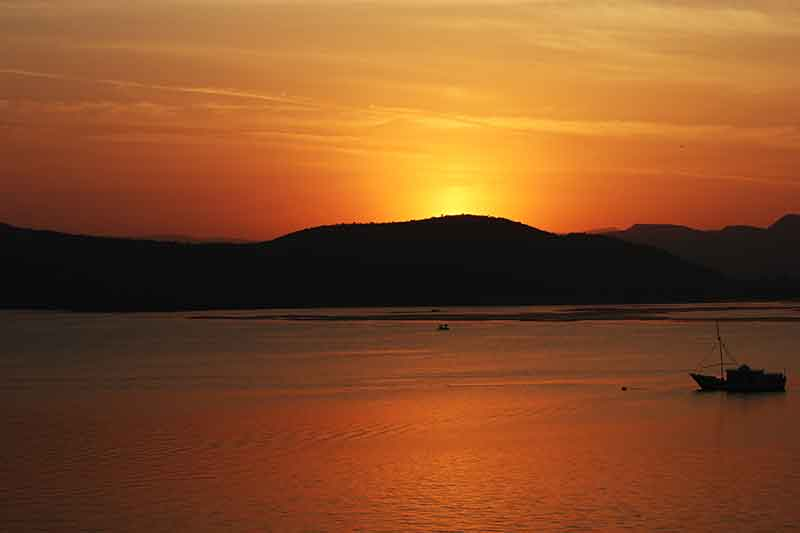
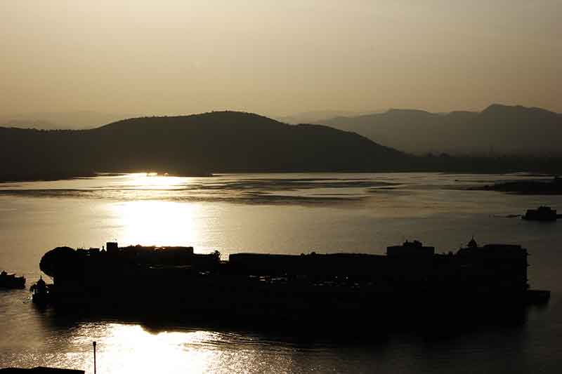
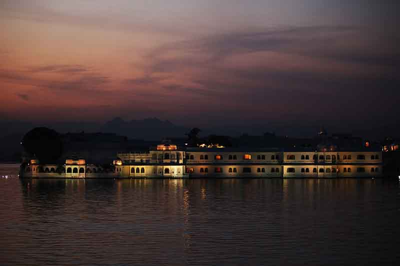
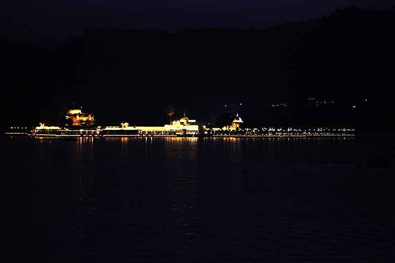


<html></html>
<head>
  <link rel="stylesheet" href="dist/assets/styles/wat_pho.css"/>
  <link rel="stylesheet" href="dist/assets/styles/main.css"/>
  <link href="https://fonts.googleapis.com/css?family=Roboto+Slab|Josefin+Sans" rel="stylesheet" type="text/css"/>
  <title>Lake Pichola</title>
</head>
<body>
  <section class="wat_pho pichola clear">
    <div class="content">
      <h2>Lake Pichola, Udaipur
        <p><a href="souvenirs.html">Back</a></p>
      </h2>
    </div>
    <p>
      An artificial fresh water lake bounding the flamboyant city palace standing high since 400 years multiplies its allure a thousand times; though it was never planned for aesthetic purposes. The lake which is a huge attraction was built for meeting the needs of the city and surroundings. 
      <br>
      </p>
    <p>
    Located in the ‘white city’ Udaipur it was built long back in 1362 AD. To impart beautiful views of the lake, four islands were built and developed on it that are attracting major tourist inflows as well as movie-makers.
    <br>
    </p>
    </p>
    <p>
      Approach road to the lake view from the precincts of city palace was so lavish and its grandeur was a thing so charming, the words would fail to describe its beauty. A private residence which was no less than a royal mansion with manicured lawns, contrasting red gigantic gates in the backdrop of beige structures all seemed outlandish.
      <br>
           
      
    </p>    
<p style="text-align:right"><a href="https://www.facebook.com/sonam.das.3726">-Ankita Dash</a></p>
<a href="index.html">
      <button>back to home</button></a>
  </section>
  <section id="footer" class="footer clear">
    <center>
      <div class="content clear">
        <div class="content-1">
          <p><span>WALK</span> <br> 4B/28, 2nd Floor, Tilak Nagar, New Delhi, Delhi 110018.
            <!--a(href='support.html') read more &#10140;-->
          </p>
        </div>
        <div class="content-2">
          <div class="content-2-1">
            <p><span>TALK</span><br> the.rovers@outlook.com</p>
          </div>
          <div class="content-2-2">
            <p><span>STALK</span>
              <ul id="social_icons">
                <li><a href="https://facebook.com/rover.org"></a></li>
                <li><a href="https://www.youtube.com/channel/UCAH9TX_LhImPk9YEKKjf26A"></a></li>
                <li><a href="https://instagram.com/the.rovers"></a></li>
                <li><a href="https://twitter.com/rovers_org"></a></li>
                <li><a href="https://plus.google.com/u/0/b/100252120756478981295/100252120756478981295/about"></a></li>
                <li><a href="http://issuu.com/therovers"></a></li>
              </ul>
            </p>
          </div>
        </div>
      </div>
      <p class="rightpara">copyrights@2015 rovers.org.in</p>
    </center>
  </section>
</body>